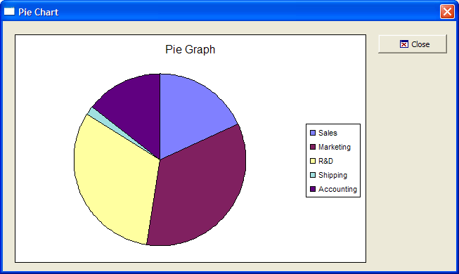

Pie Chart
This example shows how to use the Microsoft Office Chart ActiveX Control.

Example
 Note : To run this sample Xdialog script, you must have Microsoft Office installed on your machine.
Note : To run this sample Xdialog script, you must have Microsoft Office installed on your machine.
Initialize the data series and labels.
dim data[5] as P dim labels[5] as C dim values[5] as N dim vl as P dim shared Chart as P dim Graph as P dim Graph.object as P dim Graph.class as C dept_value = <<%a% Sales|123 Marketing|234 R&D|211 Shipping|12 Accounting|97 %a% data.initialize_properties("Department|Value:N",dept_value) for i = 1 to 5 labels[i] = data[i].department values[i] = data[i].value next i vl = local_variables() ' The chart Graph Graph.class="owc.chart" dlg_title = "Pie Chart" |
Display the dialog box, including the ActiveX control.
dlg_source = <<%dlg% {can_exit=close} {startup=init} {lf}; {region001} {stretch=height,width} {sp}{activex=100,25Graph}; {stretch=} {stickto=right,top} {endregion001} {region002} {sp}<%i=$a5_window_close;O={J=C} {I=1} Close; %18,1.5&Close!close>{sp}; {endregion002} %dlg% |
Add code to handle button clicks and to create the chart object. SetData()is a chart method.
' Dialog Event Handlers dlg_event = <<%code% if (a_dlg_button = "close") .or. (a_dlg_button = "") then ui_modeless_dlg_close(dlg_title) end if if a_dlg_button = "init" then a_dlg_button = "" ' Add a chart to the graph object Chart = Graph.object.Charts.Add() Chart.HasTitle = .t. Chart.Title.Caption = "Pie Graph" Chart.Type = 18
' See Complete List of Supported Chart Types for other types. Chart.HasLegend = .t. ' Add the two series dim series as P Series = Chart.SeriesCollection.Add() Series.Caption = "None" Series.SetData(1, -1, Labels) ' Refer to XY Graph Series.SetData(2, -1, Values) Graph.object.Refresh() end if %code% ui_modeless_dlg_box(dlg_title, dlg_source, dlg_event) |
Next
See Also
Complete List of Supported Chart Types, Complete List of Supported Data Types, ActiveX Examples
Supported By
Alpha Five Version 6 and Above
Limitations
Desktop applications only